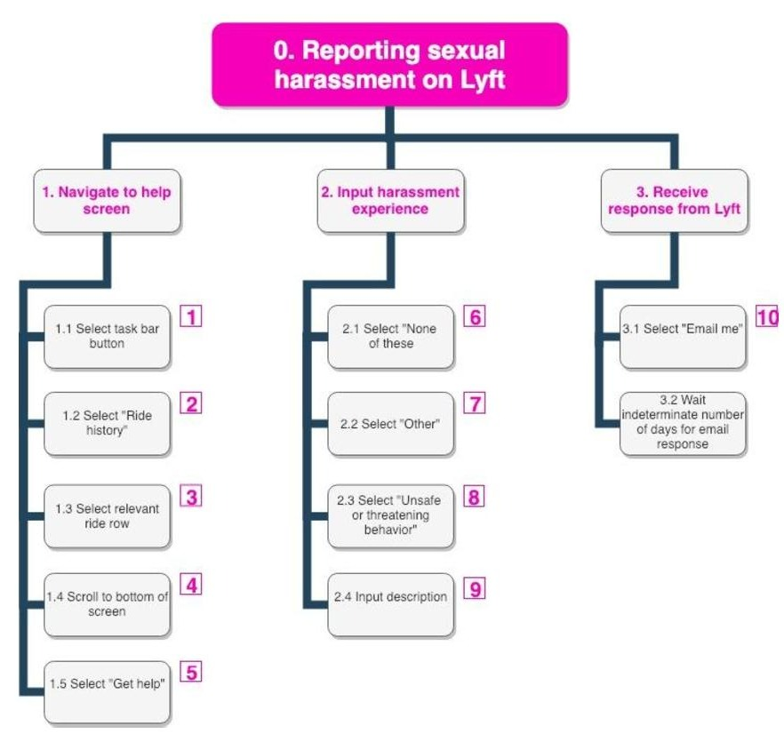
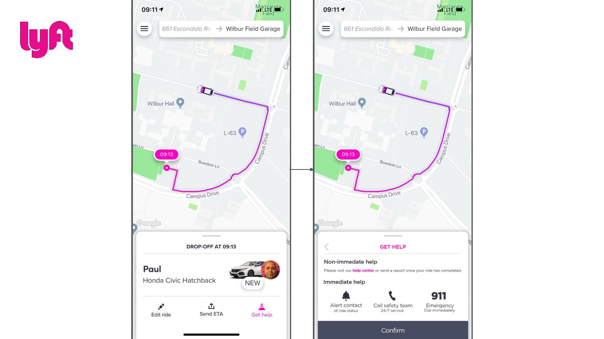
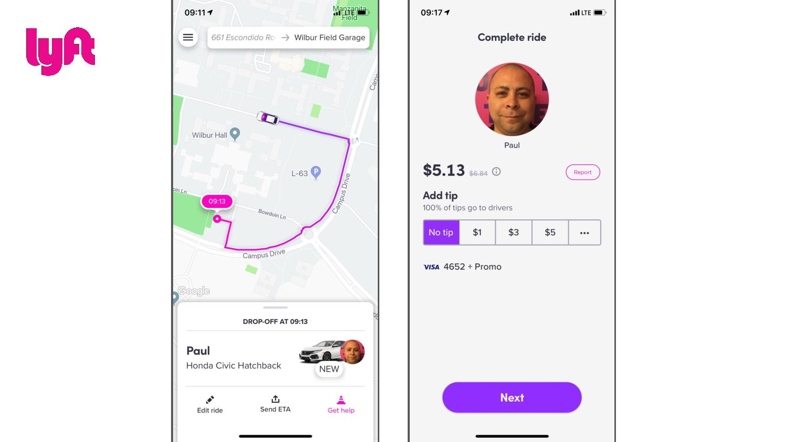

In the fall of 2018, rideshare safety advocate Allison Tielking received national attention for her "Take Back the Ride" campaign, which demanded that rideshare companies better protect female riders from sexual misconduct. In January 2019, she brought me in as a Product Design Consultant, and we co-presented to the Lyft C-Suite at their headquarters in San Francisco.
My responsibility in this role was to understand the pain points of reporting misconduct in the Lyft app and propose opportunities to enhance safety in the UX/UI. I had one month to put together a research plan, design solutions, and prepare for the presentation. All of the figures shown are sample slides I crafted and presented.
My goal was for the research to be efficient, grounded in real people's stories, and highlight a market pressure, so I decided to—
I found that the excessive steps, vague language ("The app was actually really not explicit with its language"), and unpredictable email follow-up from customer support created barriers, added confusion, and emotionally invalidated users during the sensitive aftermath of an incident.

Task analysis of reporting harassment in Lyft app, in Jan 2019
Sample slide of Lyft vs. Uber competitor analysis
Building the recommendations, step by step
Deciding to report sexual harassment is a heavy, often isolating choice. Where Lyft could be working to ease this difficult process, the inattentive user experience is instead complicating it and diminishing the courage of those who speak out.
So... where can Lyft improve?
In addition to linking to the Help Center for non-immediate support, Lyft must offer options for emergency assistance during a ride. There should also be an option to report immediately after a ride in the case where a user wants to promptly file an incident only once out of a driver's vehicle.

Left: Actual Lyft app | Right: Proposal for emergency assistance

Left: Actual Lyft app | Right: Proposal for post-ride reporting option
Those who experience sexual harassment often need time before deciding to report, if they choose to at all. That's why simplifying the reporting process for a previous ride is crucial. Filing a report must require fewer steps and use more specific language. Additionally, users should have immediate access to support and follow-up communication options beyond just email.
In February 2019, the month following the presentation, Lyft launched a Community Safety Program steering committee. They released a statement reinforcing their commitment to safety, specifically citing additions of emergency assistance during a ride and an option to report immediately after a ride. Their updated flow for reporting sexual misconduct has fewer steps, includes more specific language, provides immediate access to support, and offers alternative follow-up communication options.